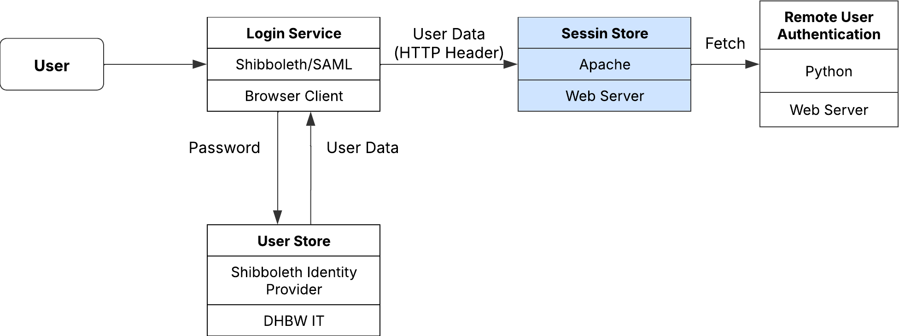

In diesem Abschnitt lernen Sie, wie Sie eine Shibboleth Authentifizierung einrichten. Diese Authentifizierung wird auf dem Manager Node erstellt und dann auf die Worker Nodes verteilt. Stellen Sie sich vor, ein Student loggt sich in eine Web-Anwendung ein und möchte direkt mit dem Programmieren beginnen. Der Manager Node startet dann einen Docker Container auf einem Worker Node, sodass der Student die Rechenressourcen dort nutzen kann, um seine Programme auszuführen.
Der Single Kurs Web App nutzt das DHBW-Shibboleth-System, um die Nutzer zu authentifizieren. Die Benutzerdaten werden zentral in der IT-Abteilung der DHBW gespeichert. Die Implementierung von Shibboleth ermöglicht eine direkte Übertragung der Daten vom DHBW-Konto in die App.
Durch die Integration von Shibboleth in die SingleCourse Web App ergeben sich folgende Vorteile:
Wie können wir das SAML-basierte Shibboleth-Authentifizierungssystem in unsere Web-Applikation integrieren? Wir verwenden den Apache Webserver, um die Benutzerdaten von der DHBW IT-Abteilung zu erhalten. Diese Daten können wir mit einem Python-Skript namens RemoteUserAuthentication abrufen. Dieser Workflow ermöglicht es uns, die Benutzerinformationen von der DHBW IT-Abteilung zu beziehen.
In diesem Abschnitt wird erklärt, wie wir diese Shibboleth-Benutzerdaten erfolgreich bekommen.